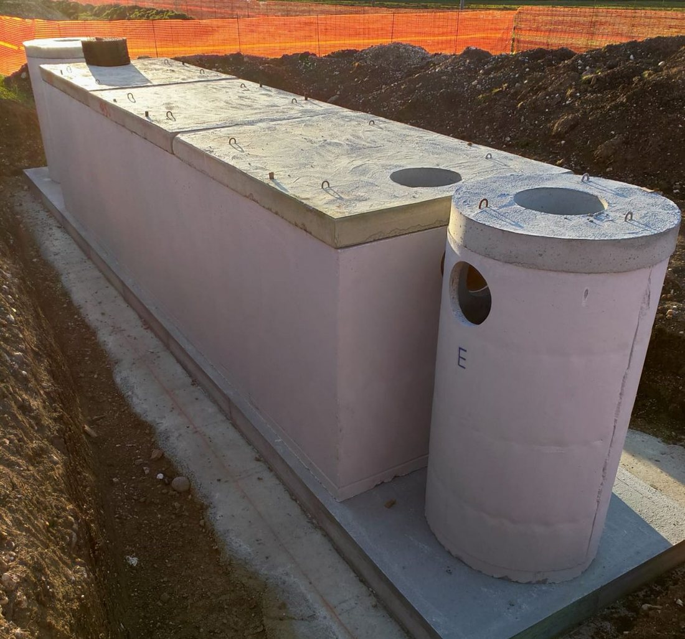

Depurazione
Separatori, Imhoff, prima pioggia e depuratori biologici in calcestruzzo.

Manufatti per il trattamento dei reflui domestici, industriali e delle acque meteoriche. Ogni impianto ha la sua tabella; per portate superiori risponde il nostro ufficio tecnico.
Vasca rettangolare e pozzetto circolare in cantiere